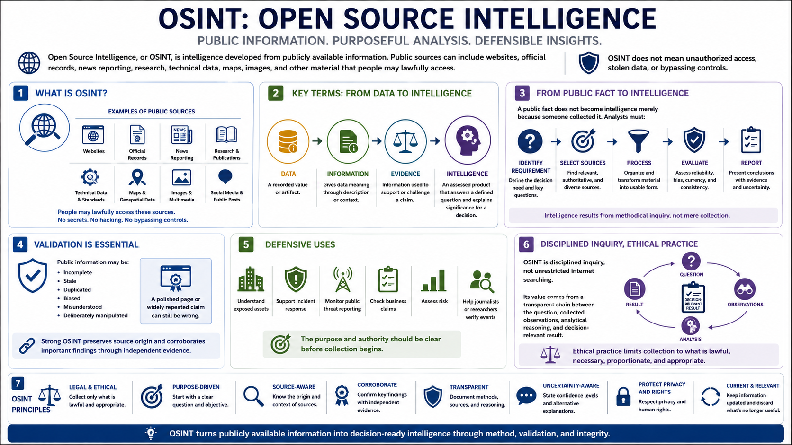

What Is OSINT?
Connecting to LMS... Progress: in progress

Narration
Open Source Intelligence, or OSINT, is intelligence developed from publicly available information. Public sources can include websites, official records, news reporting, research, technical data, maps, images, and other material that people may lawfully access. OSINT does not mean unauthorized access, stolen data, or bypassing controls.
It helps to distinguish several terms. Data is a recorded value or artifact. Information gives data meaning through description or context. Evidence is information used to support or challenge a claim. Intelligence is an assessed product that answers a defined question and explains significance for a decision.
A public fact does not become intelligence merely because someone collected it. Analysts must identify a requirement, select relevant sources, process material into a usable form, evaluate reliability, compare competing explanations, and report conclusions with evidence and uncertainty.
Validation is essential because public information may be incomplete, stale, duplicated, biased, misunderstood, or deliberately manipulated. A polished page or widely repeated claim can still be wrong. Strong OSINT preserves source origin and corroborates important findings through independent evidence.
Defensive uses include understanding an organization's exposed assets, supporting incident response, monitoring public threat reporting, checking business claims, assessing risk, and helping journalists or researchers verify events. The purpose and authority should be clear before collection begins.
OSINT is disciplined inquiry, not unrestricted internet searching. Its value comes from a transparent chain between the question, collected observations, analytical reasoning, and decision-relevant result. Ethical practice also limits collection to what is lawful, necessary, proportionate, and appropriate.